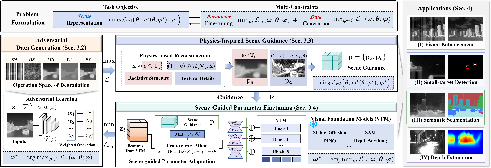
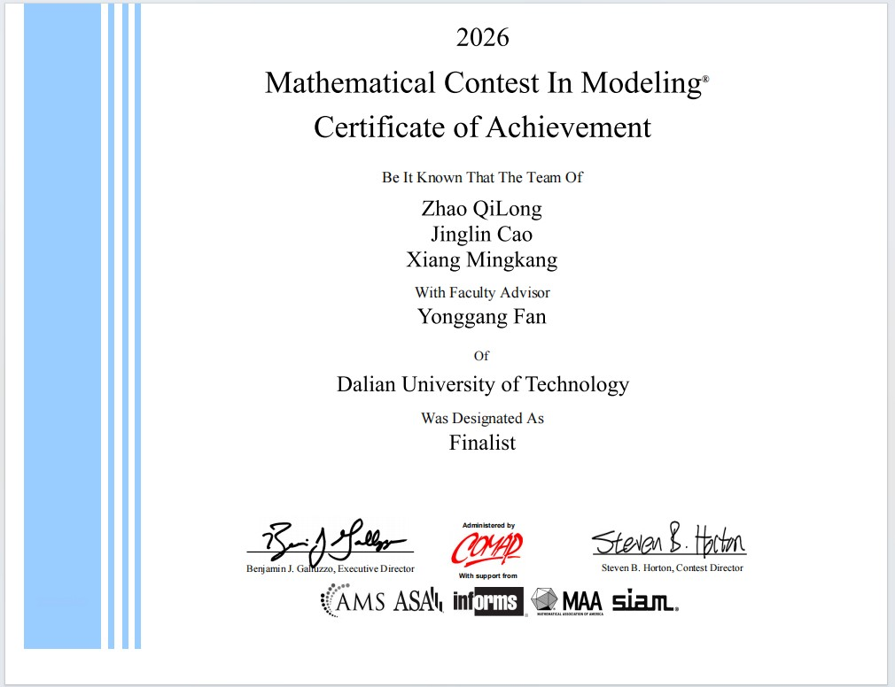

Institute of Automation, Chinese Academy of Sciences
State Key Laboratory of Multimodal Artificial Intelligence Systems.
我将于 2027 年进入中国科学院自动化研究所多模态人工智能系统全国重点实验室，攻读模式识别与智能系统专业博士学位，主要关注计算机视觉、多模态大模型以及具身智能方向。
除科研外，我也长期关注摄影、数学、足球。欢迎相同兴趣的同志联系我！
This project investigates data-model collaborative transfer for infrared perception, bridging the thermal gap through complementary data-level and model-level adaptation.

Our team received the Finalist Award in the 2026 Mathematical Contest in Modeling / Interdisciplinary Contest in Modeling.

State Key Laboratory of Multimodal Artificial Intelligence Systems.
International School of Information and Software.
Shijiazhuang, Hebei, China.
欢迎通过邮箱或社交媒体联系我。
Email: zqilong160@gmail.com
GitHub: github.com/QilongZhao-86